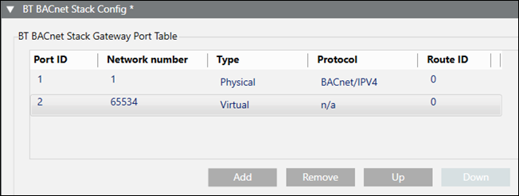
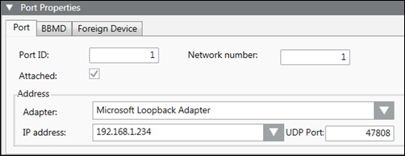
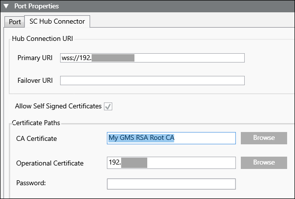
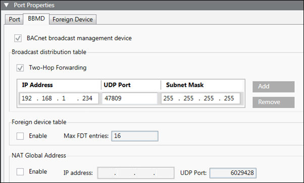
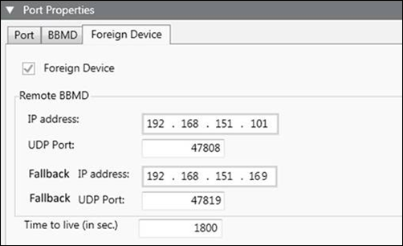

BT BACnet Stack Config
The BT BACnet Stack Config section allows you to add various network connections to the management station. Depending on the network type and its associated protocol, you can also configure Port, SC Hub Connector, BBMD, and Foreign Device properties for the connection.
You can use the following guidelines to decide which BACnet protocol is appropriate for your network:
- If you control access to the physical network and are not concerned with extra security, use the BACnet IPv4 or BACnet IPv6 protocols.
- If you do not control access to the physical network and are concerned that the network can be compromised, use the BACnet Secure Connect (BACnet/SC) protocol. BACnet/SC encrypts data when sent and decrypts data when received. As a result, you may experience decreased network performance and increased complexity for network troubleshooting. When configuring a network using BACnet/SC, you need to create two certificates—a Certificate Authority (CA) and an operational certificate signed by the CA. Both certificates can be self-signed or from a CA, and you must import them before you configure the BT BACnet Stack. For more information, see Engineering Step-by-Step > Connectivity > BACnet Driver > Creating and Importing Certificates.
BT BACnet Stack Gateway Port Table

BT BACnet Stack Config | |
Field | Description |
Port ID | The ID assigned when you add a new connection type to the table. |
Network number | The number assigned when you add a new connection type to the table. |
Type | The type of connection associated with the selected protocol—either Physical or Virtual. |
Protocol | The protocol selected when you added a new connection type to the table. |
Route ID | Used to control network communication. By default, all network connections have the same ID. This means devices on two different networks with the same Route ID, for example, can communicate with each other and with the management station through the BACnet driver, which acts as a router to connect the networks. If network connections do not have the same ID, the BACnet driver will not act as a router. This means the two networks can only communicate with the management station but not with each other. This scenario can be useful for isolating a fire network from a building control network. |
Add | Allows you to add a new connection type to the table: BACnet/IPV4, BACnet/IPV6, BACnet/SC, Virtual, or Ethernet. |
Remove | Allows you to remove a selected row. |
Up | Allows you to move the selected row up. |
Down | Allows you to move the selected row down. |
Port Properties – Port Tab

Port Properties > Port | |
Field | Description |
Port ID | The port ID for the currently selected row in the Port table. |
Network number | The network number for the currently selected row in the Port table. |
Attached | Leave the check box selected if you want the router port attached and accessible to other devices on the BACnet network. |
Route ID | Displays when the BACnet/SC protocol is selected in the port table. Used to control network communication. By default, all network connections have the same ID. This means devices on two different networks with the same Route ID, for example, can communicate with each other and with the management station through the BACnet driver, which acts as a router to connect the networks. If network connections do not have the same ID, the BACnet driver will not act as a router. This means the two networks can only communicate with the management station but not with each other. This scenario can be useful for isolating a fire network from a building control network. |
Adapter | The hardware adapter used by this driver. Applies only to BACnet and Ethernet connections. |
IP address | The IP address used by the adapter. Applies only to BACnet connections. |
UDP Port | The UDP port used by the adapter. Applies only to BACnet connections. |
Port Properties – SC Hub Connector Tab

Port Properties > SC Hub Connector | |
Field | Description |
Primary URI | A required field that allows either an IP address or a machine name. If certificates are used, the URI uses the format wss://<IP address or machine name>:<port number>wss://. |
Failover URI | Optional, but can be used in case the Primary URI fails. |
Allow Self Signed Certificates | Check this box if you will create your own certificate. |
CA Certificate | Certificate Authority certificate. Click Browse to open the Select Certificate dialog box, where you can select a certificate from the Windows Certificate store. |
Operational Certificate | Click Browse to open the Select Certificate dialog box, where you can select a certificate from the Windows Certificate store. |
Password | Enter a password only if you enabled strong private key protection when importing the client certificate. |
Port Properties – BBMD Tab

Port Properties > BBMD | |
Field | Description |
BACnet broadcast management device | Allows you to set up this management station as a BBMD. BBMDs can only be set up on BACnet/IP Networks. NOTE: When you select the BACnet broadcast management device check box, the Foreign Device Table check box in the Foreign Device tab is disabled. |
Two-Hop Forwarding | Allows you to send directed unicasts to another BBMD. Two-hop forwarding allows messages blocked by IP routers to be sent to another BBMD, which in turn re-transmits the message to the IP subnet. |
Add | Allows you to add IP addresses, UDP ports, and subnet mask numbers to the Broadcast DistributionTable for other BBMDs that you want the management station to communicate with. |
Remove | Allows you to remove IP addresses, UDP ports, and subnet mask numbers from the Broadcast Distribution Table. |
Foreign Device Table | Allows you to enable the BBMD to handle foreign device registration. The Max FDT Entries field allows you to change entries in the Max foreign device table. The default number is 16. |
NAT Global Address | Allows you to enable the BBMD for Network Address Translation (NAT) compatibility. Once enabled, you can add the IP address and UDP port for NAT support. |
Port Properties – Foreign Device Tab

Port Properties > Foreign Device | |
Field | Description |
Foreign Device | Allows you to set up a management station to function as a foreign device if it needs to communicate as a single BACnet device on a different IP subnet but not route messages between them, or if it does not have a fixed IP address. Foreign devices can communicate directly with any other BACnet device on the network, but they must register with a BBMD to receive broadcasts from BACnet devices on other IP subnets. If the BBMD check box in the BBMD tab is selected, you must deselect it to be able to select the Foreign Device check box. |
IP Address | Allows you to enter the IP address of the remote BBMD that the foreign device will register with. |
UDP Port | Allows you to change the default UDP port number, 47808. |
Fallback IP address | Allows you to enter an IP address for a second, contingency BBMD in case the first BBMD loses communication with the management station during a power failure. |
Fallback UDP Port | Allows you to enter a UDP port number that supports the Fallback IP address. |
Time to live (in sec.) | Allows you to change the default Time to live number, 1800 seconds. |